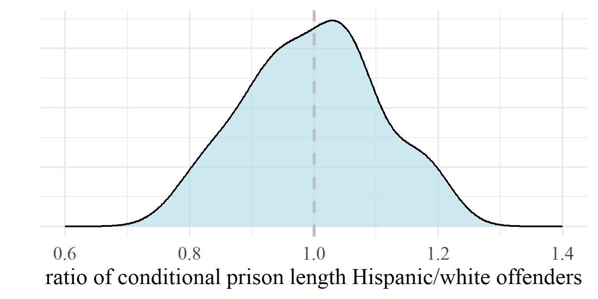

You did not control for […]


- If you believe in the principle of individualisation, the list of controls is infinite
A more realistic representation


Target estimand: the effect of judicial prejudice on sentencing
Proxy estimand: the effect of offender’s socio-demographic trait on sentencing, not mediated through warranted differences
Judicially-defined case characteristics


- Pick your poison
Other offender characteristics


- Estimating discrimination requires accuracy
Judge characteristics


- Useful to explore the origin of disparities, but that is a different question
Court/area characteristics


- Another set of endogenous factors
US federal courts: findings

